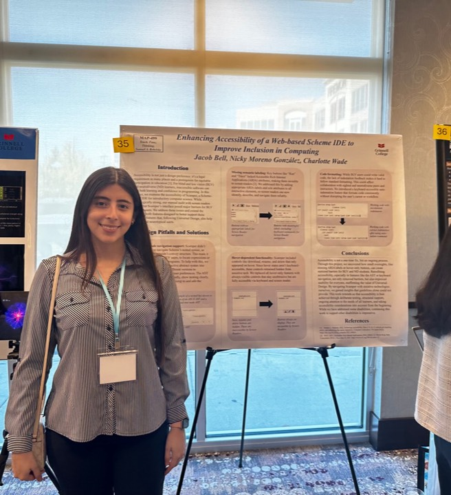

Nicole (Nicky) Moreno Gonzalez

Hi, I'm Nicky!
I'm a senior at Grinnell College majoring in Computer Science with a minor in Statistics. I'm originally from Nicaragua . My research has been supported by Grinnell's Computer Science Department and the Association for Computing Machinery (ACM).
My research interests lie at the intersection of Human-Computer Interaction (HCI), Artificial Intelligence (AI), Accessibility, and Computer Science Education. Through developing tools to automate processes and creating accessible educational experiences, I've found joy in designing straightforward, user-friendly solutions that accommodate users with different needs.
I'm currently exploring graduate programs that align with my research interests and long-term goals. Let's connect if we share similar interests or if you're interested in potential collaborations! :)
Education
Grinnell College, Grinnell, Iowa
B.A. in Computer Science, minor in Statistics · Expected May 2027
Leadership: Ladies in Education Society, CS Student Educational Policy Committee